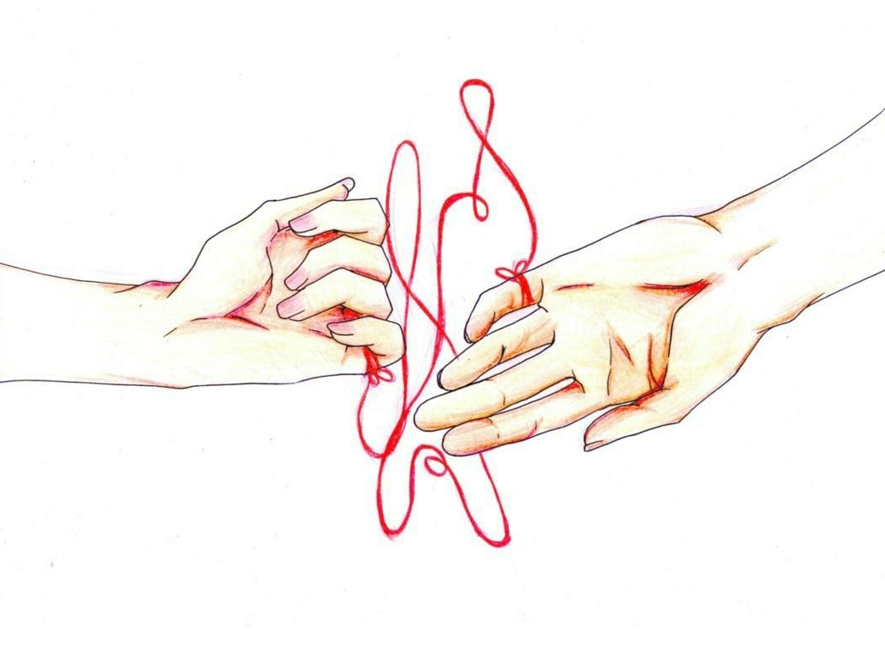

Greetings, Captain Peepy.
Have you heard of the red string of fate? It is a mystical belief that two people are destined to meet, regardless of the consequences, and fall in love. This belief is rooted in the idea of an invisible, magical string that connects them.

However, I don't see it merely as a mystical phenomenon; it resonates with scientific concepts of time and fate, akin to a river weaving its course.
We understand that attempting to defy time and destiny is foolish, which some people in love such as us are. But, instead, I propose we embrace our journey together and allow the flow of time to guide us towards our destiny. I truly believe we are fated to meet, and there are no scissors sharp enough to cut this fate.
Next, I recommend you listen to this music video that inspired me to write this letter and contemplate this concept. I do see that the video might be a bit melancholic in nature, but thats part of what makes my jaded heart tick. While there are many, this particular one never fails to stir my heartstrings.
With all my love,
Luis